Propulsion Theory Manual
Goal of Propulsion Analysis
This is the theory manual for Electrical Propulsion System and Mission analysis.
We analyze components in EPS System. You can be see can be seen in
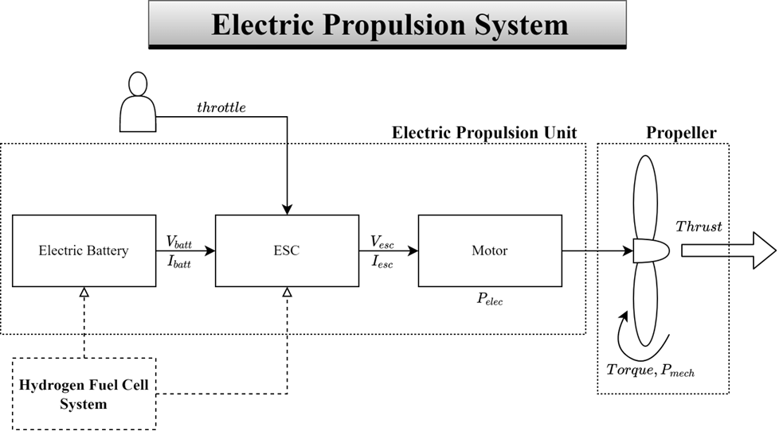 Propulsion Analysis Module is calculated based on below.
Flight Condition
User Control(Throttle)
Use Wind Tunnel Data

Propeller Analysis
Propeller Analysis’s purpose is calculating generate various forces from the rotatory power. In this analysis module, there are three parameters which can be calculated.
First, Thrust: propulsive force.
Second, Torque: opposing force to the rotating motion.
Third, Mechanical Power (Power : work per unit of time)
Theory
Blade element theory + momentum theory
Calculate characteristics of the thin strip of blade
Derive total blade performance by summation
Iterative method for the BEMT analysis
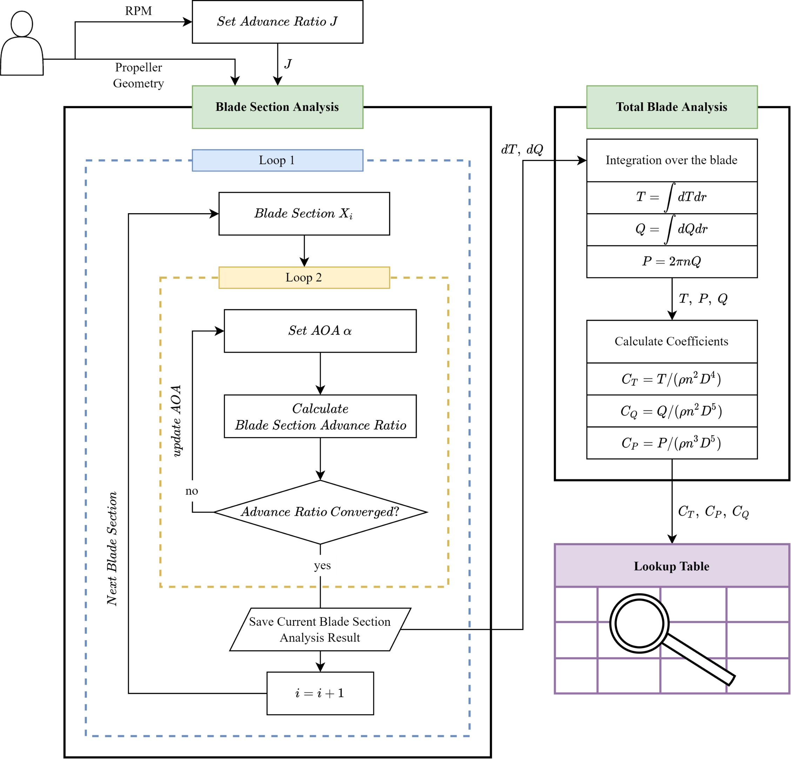
Propeller Analysis Progress
BEMT analysis Flow is below.
Set Blade Advance Ratio
Where,
n : Rotate velocity per second
J : Advance Ratio
V : Velocity(\(m/s\))
D : Propeller Diameter(\(inch\))
Calculate Inflow Angle and relative velocity.
Where,
\(\beta\) : Pitch Angle(deg)
\(\alpha\) : AOA of Blade Element(deg)
\(\phi\) : Inflow Angle(rad)
\(W\) : relative Velocity(\(m/s\))
\(r\) : distance from center of disk to propeller to be analyzed(\(inch\))
\(x\) : \(r\) / (\(0.5*D\))
Calculate lift, drag coefficient and Directional Force of Blades.
Using C81 Table
Propeller geometry(thickness,camber), \(x\), Mach
Method : Ansys fluent
Get information about \(C_l\), \(C_d\)
Where,
\(C_l\) = Lift Coefficient
\(C_d\) = Drag Coefficient
\(\lambda_{t}\) : Vertical Force Coefficient(On Blade Cross Section)
\(\lambda_{p}\) : Horizontal Force Coefficient(On Blade Cross Section)
Calculate blade Element force.
Where,
\(\rho\) : Density(\(kg/m^3\))
\(c\) : Chord(\(inch\))
\(B\) : Number of Blades
Calculate solidity ratio.
Where,
\(\sigma\) : Solidity Ratio(Propeller disk area to actual blade area ratio)
Calculate Prandtl loss Factor F.
Where,
f : Prandtl Tip Loss parameters
F : Prandtl Tip Loss Factor(the reduction in efficiency that occurs near the tips of the blades)
Calculate advance ratio(\(J\)).
Compare Process 1-(setting \(J\)) and 7-(calculate \(J\)).
If Values(\(J\)) are same, Calculate Performance Parameters
If Values(\(J\)) are different, Return Process 2
Continue Next Blade Element.
Go back to Process 1 and repeat execution.
Where,
\(C_T\) : Thrust Coefficient
\(C_P\) : Power Coefficient
\(C_Q\) : Torque Coefficient
\(\eta_{prop}\) : Propeller Efficiency(%)
T : Thrust(N)
P : Power(W)
Q : Torque(Nm)
Electic Speed Controller(ESC)
ESC analysis’s purpose is calculating voltage through ESC.ESC transfers the battery voltage to the phased wave form. First, Enables to control the rotation of the motor. Second, Send the current that the motor requires. The average voltage according to the PWM duty cycle. Based on the input battery voltage, calculate the ESC output voltage.
ESC Analysis Equation
Where,
\(V_{batt}\) : Battery Voltage(V)
\(I_{mot}\) : Motor Current(A)
\(I_{ESC}\) : ESC Output Voltage (V)
\(R_{ESC}\) : ESC Resistance(\(\Omega\))
\(throttle\) : Specific throttle value(%/100)
\(V_{ESC}\) : ESC Output Voltage(V)
Motor Analysis
Motor analysis module’s purpose is calculating Electrical motor converts electrical power into mechanical power. We use “electrical circuit model” for motor analysis. With Motor & Propeller Torque Matching, Calculate the amount of the current that the motor requires to rotate. Due to the RPM and torque equilibrium, these parameters of motor and propeller are the same. Derive the motor RPM based on the specifications, motor required current, and voltage from the ESC.
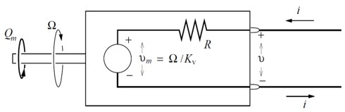 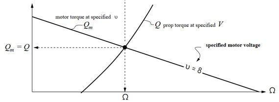
Motor Analysis Equation
Where,
\(K_V\) : Velocity Constant of Motor(\(RPM/V\))
\(K_t\) : Torque Constant of Motor(\(V/(rad/s)\))
\(I_0\) : Idle current of Motor(A)
Q : Torque(Nm)
\(R_{mot}\) : Motor Resistance (\(\Omega\))
\(RPM\) : Motor Rotate Per Minute
Battery
Battery is the energy source of the propulsion system which provides the electrical energy to the system from the chemical energy. We can cosider voltage drop of battery that each cell of the electric battery has tendency of decreasing output cell voltage according to the SOC. Below picture is for LiPo Battery Voltage Drop. First, We calculate Drain. Second, calculate SOC
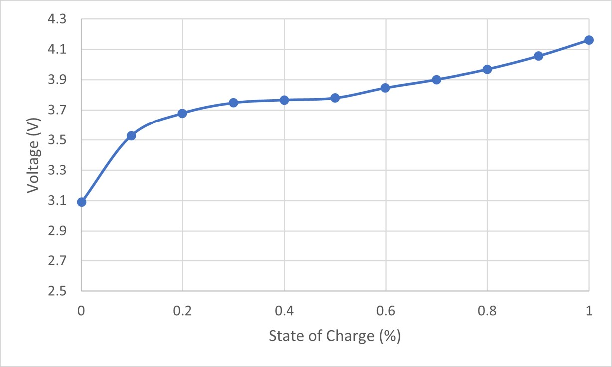
Battery analysis equation
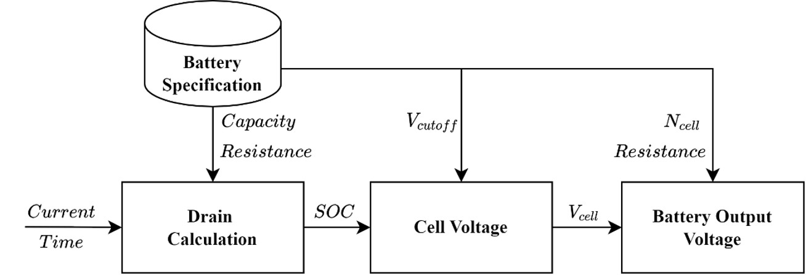
Where,
SOC(%) : State of Charge(%)
\(I_{batt}\) : Current(A)
t : Time(s)
\(Q_{batt}\) : Current Capacity(\(Ah\))
\(R_{batt}\) : Battery Resistance(\(\Omega\))
\(V_{cutoff}\) : Cutoff Voltage(V)
\(V_{cell}\) : Cell Voltage(V)
\(R_{batt}\) : Resistance(\(\Omega\))
Hydrogen Fuel Cell Modeling
Hydrogen fuel cell is the energy source of the propulsion system.It Provides the electrical energy to the system from the chemical energy. First, we calculate Open Circuit voltage of Hydrogen Fuel Cell based on thermaldynamic equation. Second, we use Nernst equation of Hydrogen fuel cell for calculating fuel cell‚Äôs voltage drop(Resistance).Finally,To calculate Voltage Losses which have a role of Resistance of Fuel Cell.To Find Stack Voltage which satisfies \(ùëÉ_{FC}^{req}\) from Propulsion Analysis
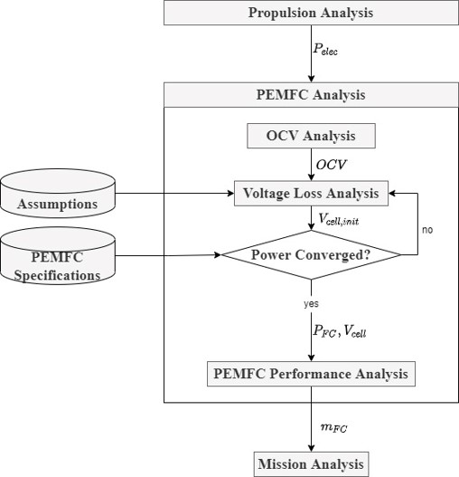
Hydrogen Fuel Cell Modeling Equation
Gibbs Energy, Enthalpy, Entropy Relation
Entropy \(s_T=s_{Air,temp}+\int_{air,temp}^Tc_p/TdT\)
Enthalpy \(h_T=h_{Air,temp}+\int_{air,temp}^Tc_p/TdT\)
Gibss Energy \(\Delta g_f=\Delta h_f-T\Delta s_f\)
Production(Water) \(\Delta g_f - \Delta g_f{Reactant(Hydrogen,Oxygen)}\)
Open Circuit Voltage \(V_{OCV} = -\Delta g_f/(2*F) + \Delta V_{pressure}\)
\(\Delta V_{pressure} = R*T/(2*F)\ln(a_{O_2}^{0.5}*a_{H_2}/a_{H_2O})\)
Nernst Equation \(V_{cell}=V_{OCV}-V_{activation}-V_{ohmic}-V_{mass}\)
Activation Loss \(V_{activation} = A*\ln{(i_{density}+i_n)/i_0}\)
Resistance Loss \(V_{ohmic} = i_{density}*r_{cell}\)
Mass Transportation Loss \(V_{mass} = -B*\ln (1-i_{density}/i_l)\)
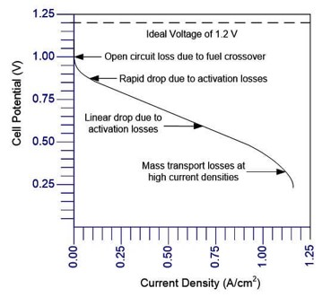
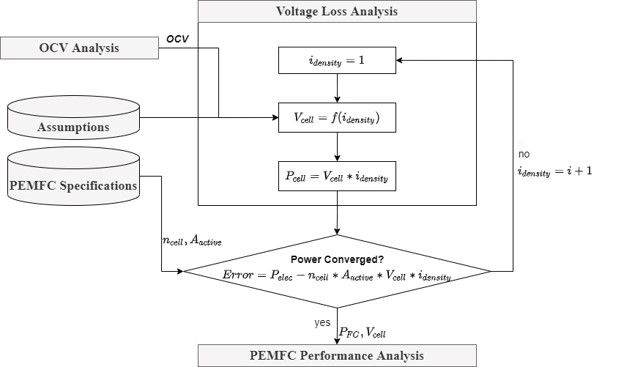
Where,
\(P_{FC}\) : Electrical Power(\(W\))
\(T_{operate}\) : FC Operating Temperature(\(K\))
\(n_{cell}\) : Number of Cells
\(A_{active}\) : Active Area(\(cm^2\))
\(A\) : Tafel Constant(V)
\(i_n\) : Exchange Current Density(\(mA/cm^2\))
\(i_{density}\) : Current Density(\(mA/cm^2\))
\(i_0\) : Inner Current Density (\(mA/cm^2\))
\(i_l\) : Limiting Current Density (\(mA/cm^2\))
\(R_{ohmic}\) : Ohmic Resistance(\(\Omega\))
\(B\) : Mass-transport parameters
\(m\) : Mass Transport Constant 1 (V)
\(n\) : Mass Transport Constant 2 (\(cm^2/mA\))
\(p_{O_2}\) : FC Operating Oxygen Pressure(bar)
\(p_{H_2}\) : FC Operating Hydrogen Pressure(bar)
\(\dot m_{H_2}\) : Hydrogen Consumption Rate(\(g/s\))
Hydrogen Fuel Cell Performance Analysis
To Calculate Hydrogen Consumption Rate, we use “Stoichiometric Theory”. Convert Electric & Chemical parameters to Quantative Parameters by using Stoichiometric.
HFC Performance Analysis Equation
\(H_2\) Consumption Rate(g/s) \(\dot m_{H_2} = P_{FC}/(2 *V_{cell}* F) = 1.05*10^{-5}*P_{FC}^{req}/V_{cell}\)
UAV Propulsion System Analysis
In system analysis, we integrate all analysis module and calculate propulsion analysis parameters.
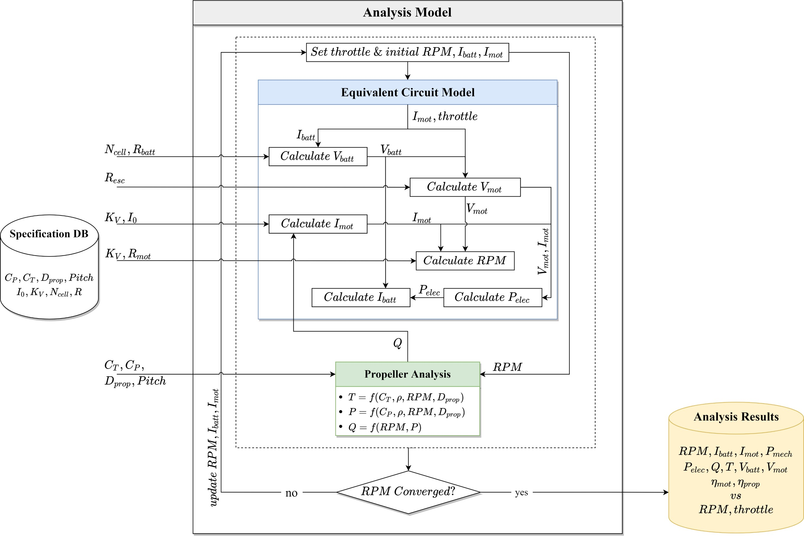
System Analysis Equation
Set Initial Value
Calculate Battery Voltage
Calculate ESC Voltage
Calculate Propeller Torque
Calculate Motor required Current
Calculate Motor RPM
Calcultate Battery Current
If
Iteration stops, save the current analysis result
If not,
Go back to 1)
Update \(RPM,I_{batt},I_{mot}\)
Where,
\(N_{mot}\) : Motor Number connected with Electric Battery
UAM Propulsion System Introduction
The propulsion system for a typical Urban Air Mobility(UAM) vehicle is shown below. The system starts with a battery that supplies DC Power. A converter converts DC power to a suitable voltage level before feeding it to an inverter. The inverter’s role is to transform the DC in to AC power, which the motor requires. A controller oversees this process, adjusting the inverter’s output through a control signal to manage the duty cycle and ensure the motor operates correctly. It also receives feedback from the motor to make real-time adjustments, optimizing performance and efficiency. The Motor, driven by AC power, generates torque transmitted through a gearbox (if needed). The gearbox adjusts the motor torque and RPM to the optimal levels for the propeller. The propeller, driven by the adjusted RPM and Torque, creates the necessary thrust to lift and propel the UAM vehicle. This complex integration ensures the UAM system operates with high efficiency, precision, and reliability which are vital for the demands of Urban Air Transportation.
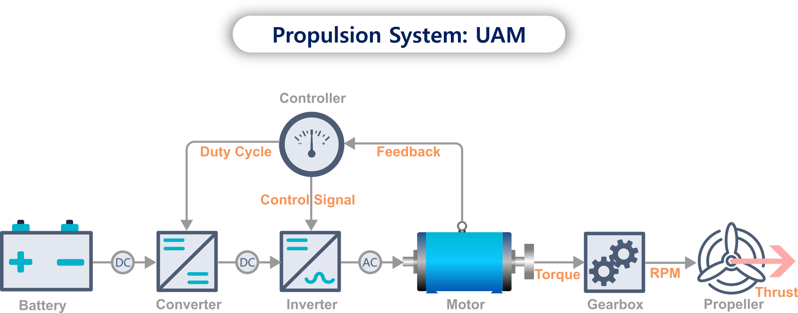
Distributed Electric Propulsion (DEP) is the system designed for efficient and reliable operation in electric aircraft. The DEP System distributes the propulsion power across multiple units, which can improve efficiency, redundancy, and control. This design allows for more precise thrust management and can enhance the aircraft safety and performance by providing multiple propulsion sources. If one unit fails, the others can continue to operate, ensuring continued flight capabilities. This setup is especially beneficial for electric aircraft, where maximizing efficiency and reliability is crucial.
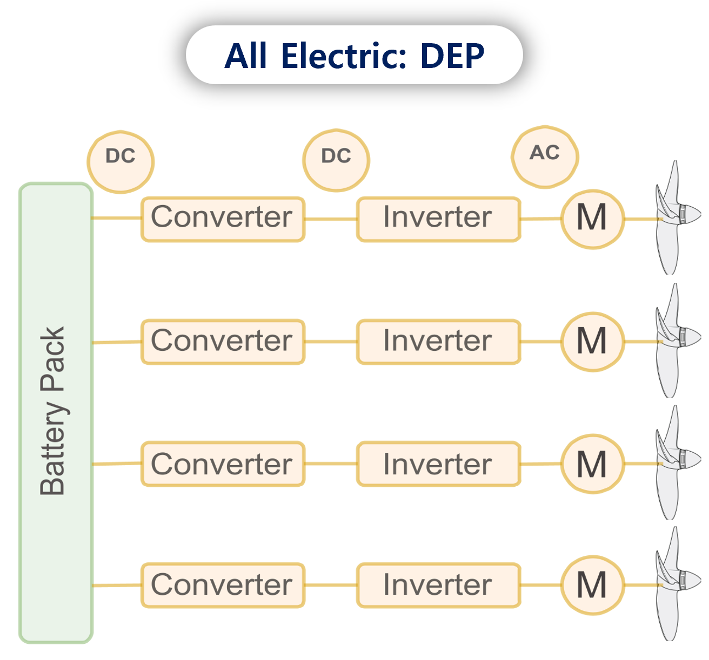
Propeller Model
The Propeller performance is estimated using a physics-based approach, viz., Blade Element Momentum Theory.
Introduction to Blade Element Momentum Theory (BEMT)
Blade Element Momentum Theory (BEMT) is a fundamental method used in aerodynamics and propeller analysis to predict the performance of propellers, wind turbines, and other rotary wings. It combines the principles of blade element theory and momentum theory to provide a comprehensive understanding of the forces and moments acting on each blade of a propeller. BEMT is widely used due to its balance between accuracy and computational efficiency, making it suitable for preliminary design and detailed performance analysis.
Blade Element Theory (BET)
Blade Element Theory divides the propeller blade into small, discrete elements along its span. Each blade element is analyzed independently to determine the local aerodynamic forces acting on it. The key steps include:
Dividing the Blade: The blade is segmented into several small elements, each with its own local chord length, twist angle, and airfoil properties.
Calculating Local Forces: For each blade elements, the lift and drag forces are calculated based on the local angle of attack and relative wind speed. These forces are resolved into thrust and torque components.
Momentum Theory
Momentum Theory applies mass and momentum conservation principles to the airflow through the propeller disk. it considers the propeller and actuator disk that imparts momentum to the air, resulting in thrust. The key aspects include:
Axial Momentum: The change in axial momentum of the airflow is used to determine the thrust generated by the propeller.
Angular Momentum: The change in angular momentum is used to calculate the torque required to rotate the propeller.
Combining BET and Momentum Theory
BEMT combines the local blade element forces with the overall momentum changes to provide a complete picture of the propeller’s performance. The integration process involves:
Iterative Process: An iterative approach matches the local inflow angles and induced velocities predicted by momentum theory with those calculated from BET
Induced Velocity Correction: The theory accounts for the induced velocity (downwash) caused by the propeller, which affects the angle of attack and, consequently, the lift and drag forces on each blade element.
Performance Prediction
By integrating the forces and moments across all blade elements, BEMT provides critical performance parameters of the propeller, such as:
Thrust: The total axial force generated by the propeller.
Torque: The total rotational force required to drive the propeller.
Efficiency: The ratio of useful power output (thrust power) to mechanical power input.
Mathematical Formulation of Blade Element Theory
This approach involves the blade element analysis, where the propeller blade is divided into numerous sections. For each section, lift and drag forces are calculated based on their unique airfoil characteristics and the prevailing operational conditions, similar to the force dynamics on an aircraft wing. These forces are then resolved along the propeller axis to determine the propeller’s resultant thrust and torque.
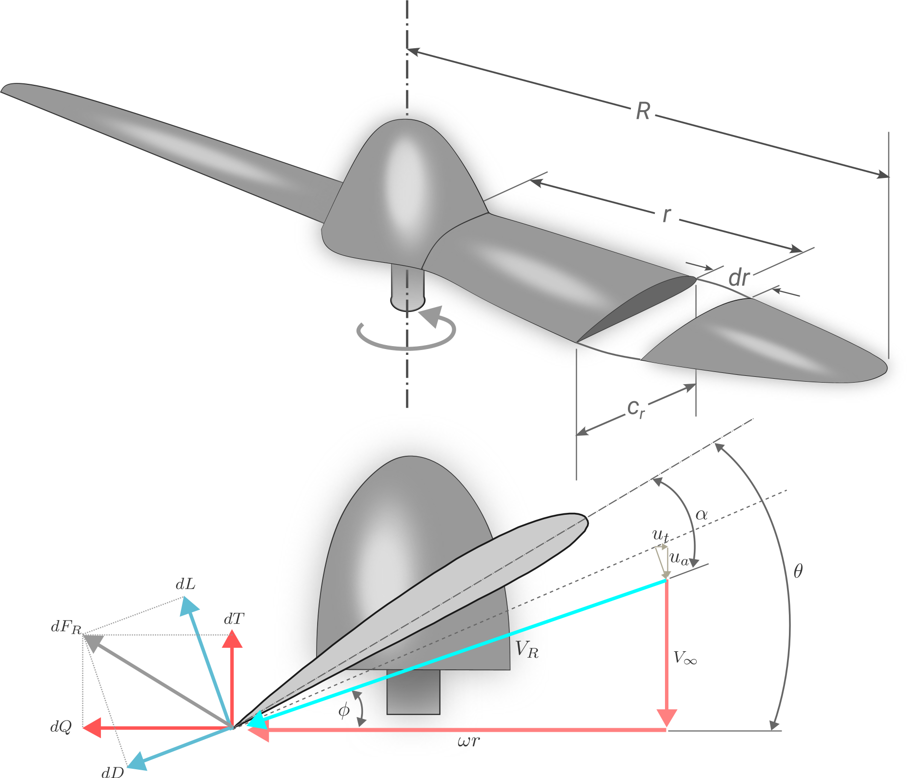
The forces generated by an elemental blade section are mathematically represented as axial force (\(dT\)) and angular force (\(dQ\)). These forces, acting in a plane perpendicular to the blade, are derived from the differential lift (\(dL\)) and drag (\(dD\)) forces, considering the inflow angle (\(\phi\))
We further express them in terms of the local resultant wind speed (\(V_{R}\)), chord length (\(c_{r}\)), air density (\(\rho\)) and aerodynamic coefficient (\(C_{l},C_{d}\))
\(V_{R}\) and \(\phi\) are calculated using the free stream velocity (\(V_{\infty}\)), rotational speed (\(\Omega\)), and the axial and angular induction factor (\(a\) and \(a^{\prime}\))
The differential thrust (\(dT\)) and torque (\(d\tau\)) are computed as follows:
Here, \(\sigma_{r} = \frac{B c_{r}}{2 \pi r}\) represents the blade solidity, with \(B\) being the number of propeller blades.
Momentum Theory
Momentum theory is based on conceptualizing the propeller as an actuator disk. This idealization represents the propeller as an infinitely thin disk that induces a minor velocity increment (\(u\)) in the flow direction.
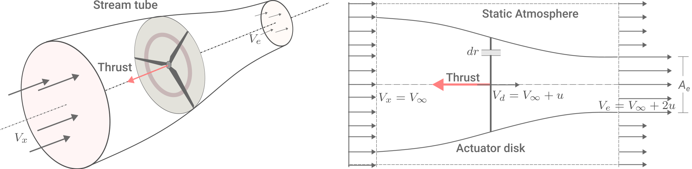
The analysis assumes that energy states before and after the propeller remain conserved. Applying Bernoulli’s theorem, we can express the pressure difference across the actuator disk.
where,
\(\Delta p\) : Pressure difference
\(\rho\) : Air Density
\(a\) : Axial Induction Factor
Considering the pressure difference over a small area \(dA = 2\pi r dr\) of the disk, the incremental thrust is derived as:
where,
\(r\) : Radial position on the disk
For the propeller’s rotational effects, the incremental torque (\(d\tau\)) is linked to the change in angular momentum for an elemental annulus of the disk.
where,
\(\omega\) : Induced angular velocity
The angular induction factor , \(a^{\prime}\) can be derived as:
where,
\(\Omega\) : Propeller disk angular velocity
The induced velocity (\(V_{d}\)) through the disk, influenced by \(a\) is:
Integrating the incremental torque over the entire disk yields the total torque:
To enhance the accuracy of momentum theory, we incorporate corrections as suggested by Glauert, aligning theoretical predictions with empirical data.
where,
\(\mathcal{F}_{T}\) : Tip loss correction factor
\(\mathcal{F}_{H}\) : Hub loss correction factor
\(\mathcal{F}\) : Glauert tip-hub loss correction factor
\(B\) : Number of Blade
\(R\) : Propeller Radius
\(r\) : Radial location of a blade element
\(R_{H}\) : Hub radius
\(\phi\) : Inflow angle
The combined effect is applied to the disk loading equations to align with Blade Element Momentum theory solutions. This yields:
where,
\(\lambda_{r}\) : Tip speed ratio
we utilize XFOIL for pre-stall aerodynamic coefficients estimation and the Viterna method for post-stall extrapolation:
where,
\(C_{d_{max}}\) : Drag coefficient at \(\alpha\) = 90\(^\circ\)
\(k_{l}\) : Correction factor for lift
\(k_{d}\) : Correction factor for drag
\(AR\) : Aspect Ratio
The coefficient \(k_{l}\) and \(k_{d}\) are calculated using stall coefficients:
where,
\(C_{l_{s}}\) : Lift Coeffcient at stall condition
\(C_{d_{s}}\) : Drag Coeffcient at stall condition
\(\alpha_{s}\) : Stall angle of attack
To quickly predict \(C_{l},C_{d}\) across various \(Re\) and \(\alpha\), use kringing-based surrogate model and coupled it to the propeller model. Once the values of \(a,a^{\prime}\) are determined, \(T\) and \(\tau\) can be estimated by summing \(dT\) and \(d\tau\) across the entire blade, respectively.
where,
\(n\) : Propeller speed in rotations per second
\(D\) : Propeller diameter
\(\eta\) : Efficiency
\(J\) : Advanced Ratio
\(P\) : Power
\(T\) : Thrust
Motor
Motor Modeling
For eVTOL aircraft propulsion, Permanent Magnet Synchronous Motors (PMSM) is more suitable than Brushless DC Motors (BLDC) due to superior compactness, high torque density and rapid response to load changes. PMSM offer greater efficiency, lower noise and improved power density, despite their higher cost and complex control requirements. These features make PMSM the optimal choice for achieving the performance goals of eVTOL aircraft design, ensuring it meets the high standards required for efficient and effective propulsion.
We use a simplified equivalent circuit model of a PMSM. The stator resistance and synchronous inductance are parameters obtained from motor manufacturers. For analyzing the motor performance, phasor analysis within the d-q reference frame is employed. The rotor magnetic field establishes the d-axis as the reference axis.
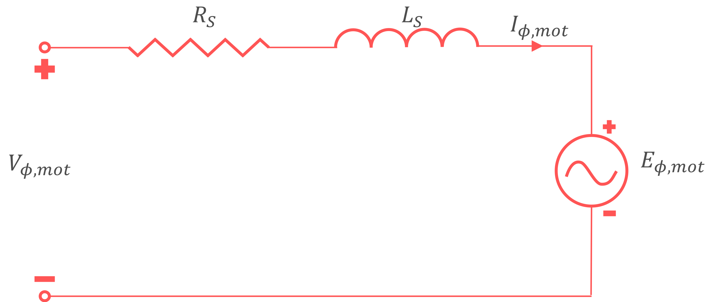
where,
\(E_{\phi,mot(q)}\) : Back electromotive force
\(K_{e}\) : Back EMF constant (\(Vs/rad\))
\(K_{v}\) : Motor constant (\(rpm/V\))
\(Q_{nl}\) : No-load torque
\(Q_{rotor}\) : Load torque from the propeller
\(Q_{em}\) : Electromechanical torque
\(P_{mech}\) : Mechanical Power loss of the Motor
When field weakening is not applied(\(I_{\phi,mot(d)} = 0\)), the magnitude of the phase current is estimated as:
where,
\(V_{\phi,mot(d)}\) : Voltage at d-axis of the motor
\(V_{\phi,mot(q)}\) : Voltage at q-axis of the motor
\(n_{pp}\) : The number of pole pairs
\(L_{s}\) : The synchronous inductance of the motor
\(R_{s}\) : The stator resistance of the motor
\(V_{\phi,mot}\) : The overall voltage magnitude
The total power loss and input power are given by:
where,
\(P_{cu}\) : The copper loss
\(P_{loss}\) : Total power loss
\(P_{in,mot}\) : Input power
The modulation index is defined as:
where,
\(V_{DC}\) : DC bus voltage
In this, mechanical losses like windage, friction, and stray losses, which generally account for a minor portion of total power losses, were deemed negligible in line with existing literature. Consequently, we equated mechanical losses to copper losses when assessing efficiency. In this, we focused on copper losses due to their substantial role in total losses.
Motor Model Validation
Conduct a validation of motor model against the EMRAX 208, an axial flux motor. It renowned for its compact and efficient design, making it ideal for electric aircraft applications.
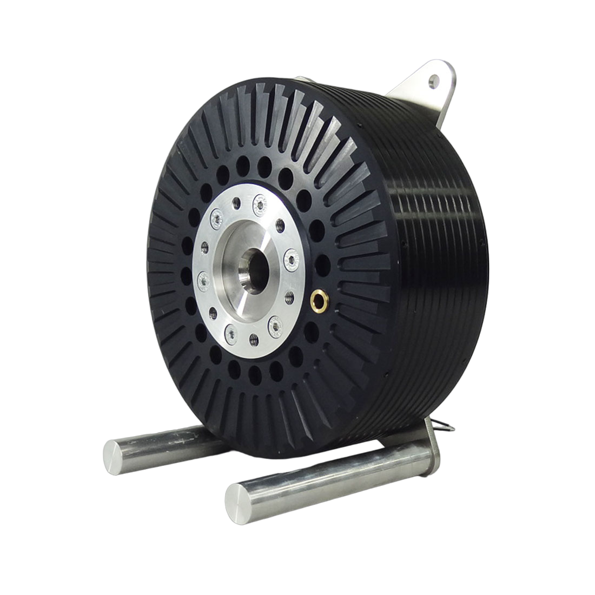
Parameters |
Values |
|---|---|
Continuous Power (\({P}_{\mathrm{cont}}\)), [kW] |
25-40 |
Peak Power (\({P}_{\mathrm{peak}}\)), [kW] |
80 |
Continuous Torque (\({Q}_{\mathrm{cont}}\)), [Nm] |
80 |
Peak Torque (\({Q}_{\text{peak}}\)), [Nm] |
150 |
Continuous Current (\({I}_{\mathrm{cont}}\)), [A] |
100 |
Peak Current (\({I}_{\text{peak}}\)), [A] |
200 |
Rated Speed (\({ \omega }_{ \mathrm{rated} }\)), [RPM] |
4500 |
Maximum Speed (\({ \omega }_{ \mathrm{max} }\)), [RPM] |
6000 |
Torque Constant (\({ K }_{ \mathrm{t} }\)), [Nm/A] |
0.83 |
Poles (\({ n_{pole} }\)), [-] |
20 |
Resistance (\({ R_s }\)), [m\(\Omega\)] |
125 |
Inductance (\({ L_s }\)), [\(\mu\)H] |
130 |
Flux Linkage (\({ \psi }_{ \mathrm{m} }\)), [Vs] |
0.0393 |
Back EMF (\({ K }_{ \mathrm{e} }\)), [Vs/rad] |
15 |
Validated data
Graph illustrates the EMRAX 208 motor’s performance, showcasing peak power and torque over varying speeds. The motor operates efficiently within its Maximum Torque per Ampere (MTPA) range and Flux-Weakening (FW) regimes for optimal power. Manufacturer data are plotted alongside our model’s performance curves. Notably, peak torque (orange) diminishes with increasing speed, while peak power (blue) rises to a plateau. Power loss (green) escalates with speed. The close alignment between the model and empirical data assures that the model is acceptable for use case.
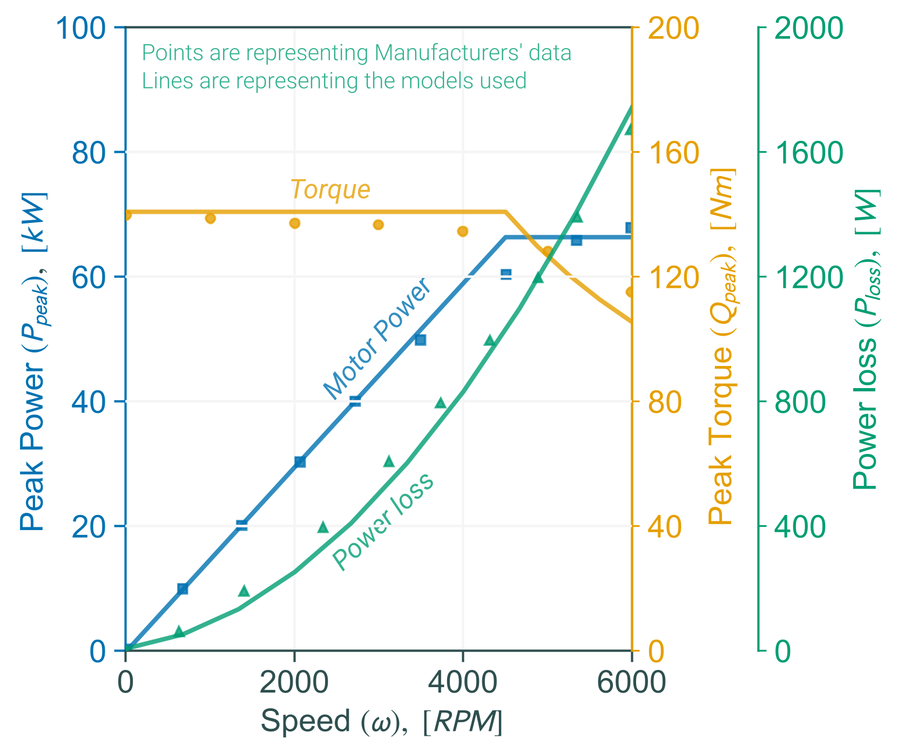
Inverter
Inverter Modeling
A three-phase inverter is used to convert DC into AC for powering a Permanent Magnet Synchronous Motor (PMSM). For Gallium Nitride (GaN) Metal-Oxide-Semiconductor Field-Effect Transistors (MOSFETs), these are high efficiency, low on-state resistance and higher switching speed.
A critical factor in inverter efficiency is the conduction losses of GaN-MOSFETs, which constitute a significant portion of total power losses. The conduction losses are quantified using the phase current and the MOSFET’s on-state resistance. Additionally, the modulation index and the phase angle are crucial to the calculation, representing the inverter’s operating conditions and the power factor of the load.
where,
\(P_{M,inv}\) : Power loss associated with the switching devices in the inverter, typically due to conduction losses in the MOSFETs
\(P_{D,inv}\) : Power loss associated with the diodes in the inverter
\(I_{\phi,inv}\) : Phase current in the inverter
\(R_{ds(on)}\) : On-Resistance of the switching devices (MOSFET) when they are conducting
\(m_{a}\) : Modulation Index, which is a measure of the amplitude modulation in the inverter
\(cos(\phi)\) : The phase angle between the voltage and the current
\(V_{fw}\) : The forward voltage drop across the diodes in the inverter
\(R_{d}\) : The dynamic resistance of the diodes in the inverter
The Total conduction losses within the inverter obtained by summing the losses from the MOSFETs and diodes. Input power and current to the inverter can be determined to provide insight into the overall efficiency of the power conversion process. The analytical approach enables the quick estimate of the inverter’s efficiency.
where,
\(P_{loss,inv}\) : Total conduction losses
\(P_{in,inv}\) : Input power to the inverter
\(P_{out,inv}\) : Output power from the inverter
\(I_{in,inv}\) : Input current to the inverter
\(V_{DC}\) : DC link(bus) voltage supplied to the inverter
Converter
Converter Model
A DC-DC converter is an integral component in power supply applications, serving to adapt the voltage level of a DC source to meet the requirements of various devices. We focused on buck converters due to their relevance in electric propulsion systems, particularly in eVTOLs. High-voltage batteries or fuel cells employed in eVTOLs necessitate buck converters to step down the voltage to suitable levels for motors, avionics, and other electric devices.
The efficiency of a buck converter is a critical aspect directly influenced by the power losses occurring within its component, namely the MOSFET, diode and inductors. The duty cycle is instrumental in calculating the power losses in both the MOSFET and the diode.
where,
\(D\) : Duty Cycle of the converter
\(V_{in,conv}\) : Input voltage
\(V_{out,conv}\) : Output voltage
where,
\(P_{L,conv}\) : Inductor power loss
\(I_{out,conv}\) : Output current of the converter
\(R_{L}\) : Inductance of the converter
The cumulative loss within the converter aggregates the losses from the MOSFET, diode, and inductor components.
where,
\(I_{in,conv}\) : Input current to the converter
\(P_{out,conv}\) : Power output of the converter
\(P_{loss,conv}\) : Total Power loss in converter
It is essential to account for all types of losses to ensure the accurate prediction of the converter’s performance. These losses directly impact the efficiency and thermal management of the converter, which are crucial for the reliable operation of the eVTOLs.
Battery
Battery Model
Equivalent Circuit Model (ECM)-based models offer an optimal balance between complexity and accuracy, making them preferred choices for real-world applications. While Thevenin and other battery models provide higher accuracy, around \(\pm\) 1%, then our framework utilized a modified version of the ECM. This model is selected for its speed, robustness and reasonable accuracy. It simplifies the parameterization process using inputs derived from discharge characteristics or manufacturer data and is adaptable to a variety of battery chemistries and configurations. The modular nature of our framework also allows for easy integration of alternative models, offering the flexibility needed to adapt to different scenarios.
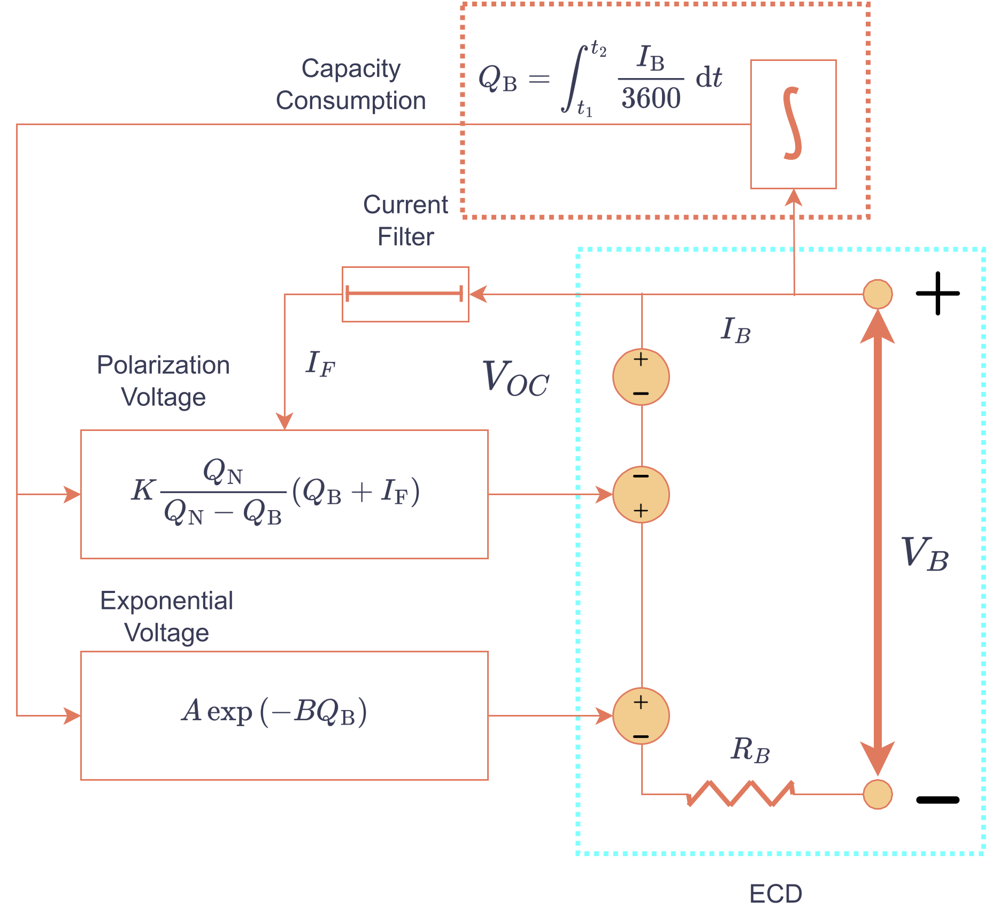
Below graph presents the typical discharge curve of a Li-ion battery, capturing three distinct regions. Rapid voltage drop, termed the exponential region, followed by the nominal region, where voltage stabilizes, offering consistent power output. Finally, the voltage sharply decreases to the cut-off point, indicating the battery’s minimum usable limit to prevent damage.
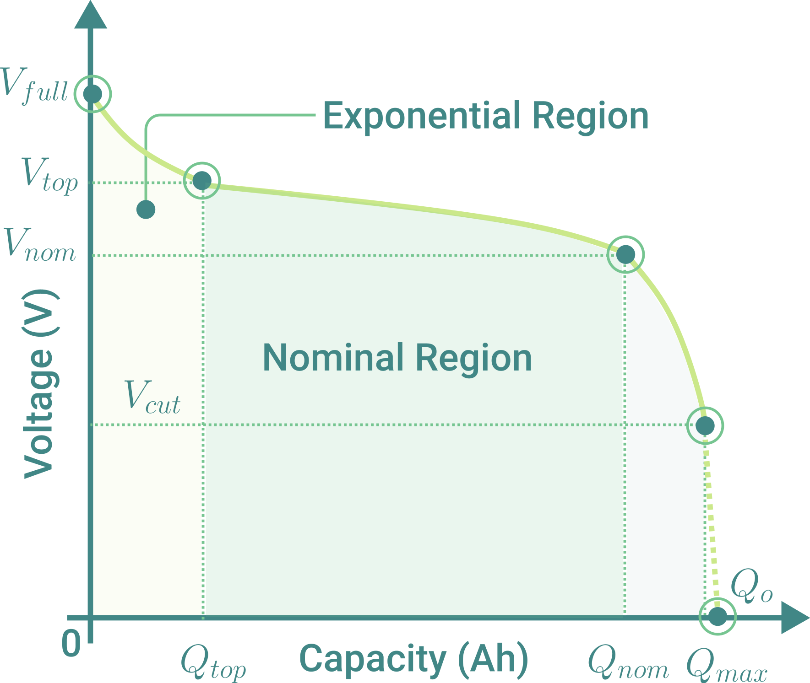
In here, we use a model incorporating polarization voltage as a time-dependent state variable, accounting for variations in output voltage. The discharge voltage is estimated:
where,
\(V_{B}\) : Battery Terminal Voltage (V)
\(V_{C}\) : Battery constant voltage (V)
\(V_{F}\) : Filtered battery voltage (V)
\(V_{N}\) : Battery nominal voltage (V)
\(K\) : Polarization constant(\(V/Ah\)) or Polarisation resistance (\(\Omega\))
\(Q_{N}\) : Nominal zone Battery Capacity (Ah)
\(Q_{max}\) : Maximum Battery Capacity (Ah)
\(Q_{E}\) : Exponential zone Battery Capacity (Ah)
\(I_{F}\) : Filtered battery current(A)
\(I_{B}\) : Actual Battery Current(A)
\(A\) : Amplitude of the exponential zone (V)
\(B\) : Exponential zone time constant inverse (\(Ah^{-1}\))
\(R_{B}\) : Internal resistance (\(\Omega\))
For estimating the State of Charge (SOC):
Regarding the physical arrangement of batteries, they can be configured in series-parallel connections to achieve the desired pack voltage and current. The total pack voltage and current can be calculated by the numbers of series and parallel connections.
where,
\(V_{pack}\) : Total battery pack voltage
\(I_{pack}\) : Total battery pack current
\(N_{S}\) : The number of series connections
\(N_{P}\) : The number of parallel connections
Battery Chemistry Model and Parameter
Chemistry |
Voltage (\(V_B\)) |
Model |
|---|---|---|
Li-Ion |
Discharge |
\(V_{\mathrm{EC}} - K \frac{Q_{\mathrm{N}}}{Q_{\mathrm{N}} - Q_B}\left(Q_B + I_{\mathrm{F}}\right) + A \exp \left(-B Q_B\right)\) |
Charge |
\(V_{\mathrm{EC}} - K \frac{Q_{\mathrm{N}}}{Q_{\mathrm{B}} - 0.1 \cdot Q_N}I_{\mathrm{F}} - K \frac{Q_{\mathrm{N}}}{Q_{\mathrm{N}} - Q_{\mathrm{B}}}Q_{\mathrm{B}} + A \exp \left(-B Q_B\right)\) |
Battery Parameters
Type |
Li-Ion |
|---|---|
Parameters |
3.3V, 2.3Ah |
\(V_C\) [V] |
3.366 |
\(R_B\) [\(\Omega\)] |
0.01 |
\(K\) [\(\Omega\)] |
0.0076 |
\(A\) [V] |
0.26422 |
\(B\) [\(Ah^{-1}\))] |
26.5487 |